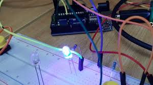

Arduino Red Blinking LED
A simple project to make an LED blink using an Arduino.
Step 1: Gather Components
- Arduino Uno
- Red LED
- 220 Ohm Resistor
- Jumper Wires
- Breadboard
Step 2: Wiring the Circuit
Connect the LED to the Arduino through a resistor to limit current:
- Connect the long leg (anode) of the LED to a digital pin on the Arduino (e.g., Pin 13) through the 220 Ohm resistor.
- Connect the short leg (cathode) of the LED to the Arduino GND.
Step 3: Arduino Code
// Placeholder for Blinking LED Arduino Code
const int ledPin = 13;
void setup() {
pinMode(ledPin, OUTPUT);
}
void loop() {
digitalWrite(ledPin, HIGH);
delay(1000);
digitalWrite(ledPin, LOW);
delay(1000);
}
Step 4: Upload and Observe
Upload the code to the Arduino. The red LED connected to Pin 13 should start blinking.
